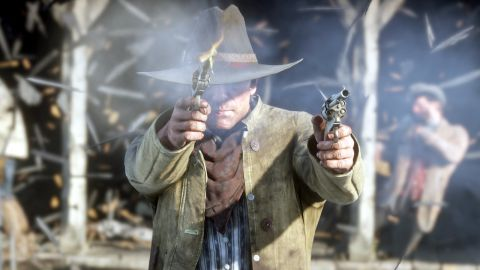

A Rocstar Games Production
America, 1899. The end of the wild west era has begun. After a robbery goes badly wrong in the western town of blackwater. Arthur Morgan and the Vander der Linde gand are forced to flee. With federal agents and the best bounty hunters in the nation massing on the heels, the gang must rob, steal and fight their way across the rugged heartland of America in order to survive. As deepening internal divisions threaten to tear the gang apart, Arthur must make a choice between his own ideas and loyalty to the gang who raised him. Read More